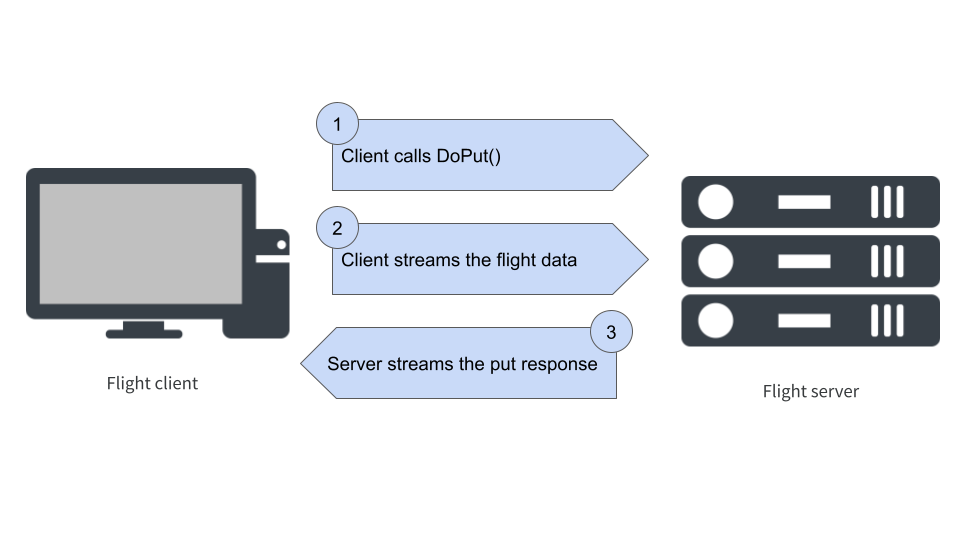
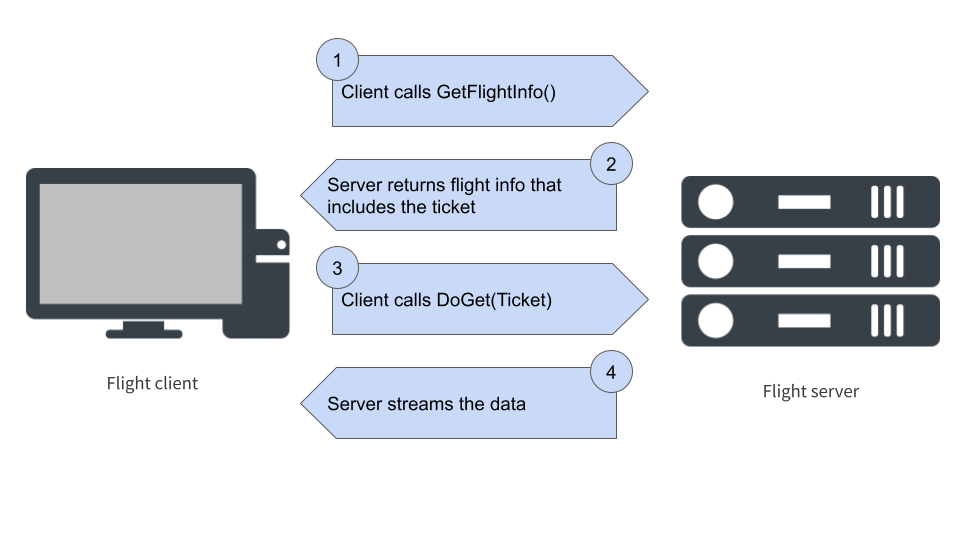

![]()
library(arrow)
library(reticulate)
use_miniconda("base")This is a post about Arrow Flight. I will probably tell a whimsical anecdote to open this post. Or not. Who knows. Maybe I’ll leave the introductory paragraph like this. That would be pretty on-brand for me actually.
The what and why of Arrow Flight
The central idea behind flight is deceptively simple: it provides a standard protocol for transferring Arrow data over a network. But to understand why this is a Big Deal, you need to have a good sense of what the Arrow ecosystem is all about. For that, I found it helpful to go all the way back1 to the original announcement of flight by Wes McKinney. Here’s how he explained the motivation:
Our design goal for Flight is to create a new protocol for data services that uses the Arrow columnar format as both the over-the-wire data representation as well as the public API presented to developers. In doing so, we reduce or remove the serialization costs associated with data transport and increase the overall efficiency of distributed data systems. Additionally, two systems that are already using Apache Arrow for other purposes can communicate data to each other with extreme efficiency.
To put this in context, it helps to have a little recap of how the project has grown: Arrow was originally introduced to provide an efficient and language-agnostic standard for representing tabular data in-memory, but as the project has grown it has necessarily expanded in scope. For example, storing data in-memory is not entirely useful if you can’t manipulate it, so Arrow now supplies a powerful compute engine that underpins both the arrow package in R and the pyarrow library in Python, and several others besides. In other words, the compute engine has been developed to solve a practical data science problem.
Arrow Flight evolved from a similar practical concern. It’s pretty trivial to point out that we live in a networked world now, and as consequence it is hard to avoid situations where the data to be analysed are stored on a different machine than the one that does the analysis. In my earlier posts on reticulate and rpy2 I talked about how to efficiently share an Arrow data set between languages, but I implicitly assumed in those posts that the R process and the Python process were running on the same machine. The moment we have processes running on different machines, those tricks don’t work anymore!
Flight is designed to solve this problem. It’s not a fancypants protocol with lots of different parts. It exists for one purpose: it makes it super easy to transfer Arrow-formatted data. That’s it. It’s pretty flexible though, and you can build other stuff on top of flight (more on that later), but the design of flight is deliberately simple. It’s meant to be pretty minimal, so you can “just use it” without having to think too hard or do any of the obnoxious implementation work yourself.
Prerequisites
There are a couple of prerequisites for this post. Specifically I’ll assume you have the arrow and reticulate packages installed in your R environment, and similarly that your Python environment has pyarrow installed. If you’re only interested in the Python side, you probably don’t need either of the R packages, but R users will need to have the pyarrow installation because the R flight implementation builds on pyarrow.
An R example
The implementation of Arrow Flight varies a little across languages. In this post I’m going to focus on the two languages I use most – R and Python – but there’s nothing stopping you from using other languages. For example, the book In-Memory Analytics with Apache Arrow by Matt Topol has worked examples using C++ and Go, in addition to Python.
For the purposes of this post I’m going to start with R because the arrow package in R exposes a “high-level” interface that will allow us to start using a flight server without having to dive deeply into how it all works. However, as we’ll see, there are some limitations to this approach – not least of which is the fact that the R implementation turns out to secretly be a Python implementation under the hood – and as the post progresses I’ll pivot to Python in order to unpack some of the lower-level functionality.
To do this I’ll need access to the arrow and reticulate packages, and I’ll need to make certain that the Python environment is one that has pyarrow installed. For my machine, the commands to do this look like this:
It may be a little different for you depending on your configuration. For more information on this, take a look at the reticulate post I wrote recently.
The flight server
Okay, so let’s get started by thinking about the simplest possible scenario for using a flight server. In this set up all we want the server to do is to act as a “cache” for Arrow tables. Clients can upload tables to the server, download tables from the server, and so on. That’s all we’re really trying to accomplish, and happily for us this use case is supported out of the box in R.
Here’s how it works. As I mentioned earlier, R doesn’t actually implement the flight protocol itself: it’s just a wrapper around the Python tools. What that means is the underlying flight server is actually written in Python, and if we want to start that server running from R we have to call the load_flight_server() function that will allow us access to this server from R. Conveniently, the arrow R package comes bundled with a “demo” server that already provides the server side functionality that we want, and I can import it like this:
server_class <- load_flight_server("demo_flight_server")When I do this, all I’ve done is obtain access to the relevant Python code. I haven’t created a server yet and I haven’t started it running either. Create an instance of the “demo server”, I call the DemoFlightServer() method attached to the server_class() object:
server <- server_class_object$DemoFlightServer(port = 8089)We have now defined a server that, once started, will run on port 8089. The server object has a serve() method that I can call to start it running:
server$serve()I’ve written a short script called start_demo_server.R that bundles all these operations together, and the easiest way to start a server running in its very own R process (i.e., an R session that isn’t the one you’re currently working in) would be to type this at the terminal:
Rscript start_demo_server.R &This will start an R process as a background job that will create a server and start it running. As an alternative, if you’re comfortable with using the callr package, you can use callr::r_bg() to create a child R process from your current one. The child process will run in the background, and we can start start the server within that R session without blocking the current one. Here’s some code that will do exactly that:
r_process <- callr::r_bg(function() {
reticulate::use_miniconda("base")
demo <- arrow::load_flight_server("demo_flight_server")
server <- demo$DemoFlightServer(port = 8089)
server$serve()
})Regardless of what method you’ve chosen, I’ll now assume that the demo server is now running in the background on port 8089.
The flight client
Now that I have this server running quietly in the background on port 8089, I can define a flight client in my current R session that can interact with it. To do that, I call flight_connect():
client <- flight_connect(port = 8089)Perhaps unsurprisingly, the R object client is a wrapper around a Python flight client. It comes with various methods that implement low-level flight operations, but I’m going to hold off talking about those for a moment because we won’t need to use the low-level interface in this initial example.
Let’s start by using the client to as ask a simple question: what is stored on the server? The way that data source are conceptualised in Arrow flight is as a set of “flights”. Each individual “flight” corresponds to a data stream from which the client can download data. The precise implementation of this idea (e.g., what data structures are stored in a single flight) varies from server to server, but in both examples in this post each flight stores a single Arrow table.
In any case, to find out what flights are currently available on our server, we can call the list_flights() function:
list_flights(client)list()Hm, okay, there’s nothing there. That makes sense because I haven’t actually uploaded anything to the server yet! Okay, well, let’s suppose I want to store a copy of the airquality data as an Arrow table on my server. As R users are probably aware, this is a data set that comes bundled with R, but just so we’re all on the same page here’s the first few rows of the data set:
head(airquality) Ozone Solar.R Wind Temp Month Day
1 41 190 7.4 67 5 1
2 36 118 8.0 72 5 2
3 12 149 12.6 74 5 3
4 18 313 11.5 62 5 4
5 NA NA 14.3 56 5 5
6 28 NA 14.9 66 5 6This object is a regular data frame in R, not an Arrow table, and strictly speaking what we want our client to do is send an Arrow table version of this data set to the server. Happily for us, the flight_put() function supplied by the arrow package will take care of the conversion for us, and we can cache a copy of the data as an Arrow table on the server in one line of code:
flight_put(client, data = airquality, path = "pollution_data")In this code, the flight_put() function uses the client object to communicate with the server, it uses the data argument to find the local copy of the data set, and the path argument is used to provide a name for the data set on the server (i.e., on the server this data set will be called pollution_data). Now that we’ve done the upload, if we try calling list_flights() again we get this as the result:
list_flights(client)[1] "pollution_data"Yay!
Now, just to prove to you that I’m not cheating, let’s check to make sure that there is no object called pollution_data stored locally within my R session:2
pollution_dataError in eval(expr, envir, enclos): object 'pollution_data' not foundClearly there is no object called pollution_data available in my current R session. That data set is stored only on the server. To get access to the data cached on the server, I use the flight_get() function:
flight_get(client, "pollution_data")Table
153 rows x 6 columns
$Ozone <int32>
$Solar.R <int32>
$Wind <double>
$Temp <int32>
$Month <int32>
$Day <int32>
See $metadata for additional Schema metadataWhat has just happened is our client contacted the server and downloaded a copy of the Arrow table stored remotely. It works!
At the very least we have proof-of-concept that we can start a flight server and use it to upload and download data. But there’s a lot that hasn’t really been explained properly here. The time has come to start digging a little deeper, so we can really get a sense of what’s going on under the hood and how this simple example can be extended.

Unpacking the data exchange process
One thing that I like about the flight functionality exposed through flight_connect(), flight_put(), flight_get(), etc is that it operates at a high level of abstraction. In my day-to-day data analysis work I really don’t want to spend my time thinking about low-level operations. When I tell R to “put” a data set onto the server I want it to happen with one line of code. This high level API is super useful to me on an everyday basis, but it also masks some of the details about how flight works. To give you a sense of what’s being hidden, we can take a closer look at the client object. Here’s a list of some of the methods that are available through the object itself:
client$do_put()
client$do_get()
client$do_action()
client$list_action()
client$list_flights()
client$get_flight_info()Each of these methods describes a low level operation available to the flight client, and because the R implementation is built on top of the Python version, these are all Python methods that are available in R thanks to the magic of reticulate. What we’re seeing exposed here are the actual Arrow flight methods, and it’s helpful to unpack things a little so we can see how these methods are related to the functions I’ve been calling in R.
As you might expect, the do_put() method for the client is very closely related to the flight_put() function that I called earlier! However, they aren’t the same. The do_put() method doesn’t actually upload any data, it merely opens a connection to the server, which we can then use to stream data from the client to the server. If you were calling the do_put() method directly, you would need to take care of that yourself. But it’s tiresome to write that code over and over, so the flight_put() function provides a convenient high-level wrapper that abstracts over all that.
If you’re the analyst working with the data, this is fabulous. But if you’re looking to implement your very own flight server, you probably need to understand what these low level operations are. So that’s where we’re headed next…
Unpacking flight_put()
Let’s start by taking a look at what happens when we call the R function flight_put(). Our goal is to transmit the data to the server, and there’s an Arrow Flight method called do_put() that can do this for us. However, the structure of the interaction is a little more complicated than simply calling do_put(). It’s a multi-step operation that unfolds as shown below:

The first step in the process occurs when the client calls do_put(), a flight method that takes two arguments: a flight descriptor object that is used to identify the specific data stream that the client wants to be sent – and later on I’ll talk what the descriptor actually looks like – and the schema for the flight data.3 Setting aside the particulars of the syntax – which might be different in every language – here’s what the do_put() fuction call looks like on the client side:
do_put(descriptor, schema)Passing the schema on the client side serves a particular purpose: it allows the client to create stream writer and stream reader objects that are returned to the client-side user, and are also passed along to the server. The writer object is the thing that will take care of streaming data to the server, and the reader object is responsible for reading any metadata response that the server happens to send.4
Now let’s have a look at the server side, where the do_put() method expects three inputs: the flight descriptor, the writer, and the reader. So here’s the signature on the server side:
do_put(descriptor, reader, writer)As long as these methods are written appropriately for both the client and the server, we now have a situation where both machines agree on the description of the data and have objects that can take care of the streaming process.
We now move to step two in the communication, in which the client streams the data to the server. Once the data arrive on the server side, the do_put() method for the server stores the data along with an appropriate descriptor, so that it can be found later. Optionally, this is followed by a third stage in which the server sends a response containing metadata to the client. In the example server I’ll build in the next section, I won’t bother with that step!
Unpacking flight_get()
Next let’s look at flight_get(). When I called this function earlier, it triggered two separate interactions between the client and server. First, the client calls the get_flight_info() method, and the server responds with some information about the data source that includes – among other things – a ticket. Again, the ticket is a particular data structure that I’ll talk more about later, but for now it’s enough to note that it’s a token that uniquely specifies which flight is requested.
Once in possession of this ticket, the client can call do_get() to request that the server send the data that matches the ticket, which the server then streams. So the whole exchange looks like this:

So, in the previous example when I called flight_get(), the process looked like this. On the client side, we used the "pollution_data" path to construct a descriptor object and the client used get_flight_info() to request that information about this “flight” from the server:
get_flight_info(descriptor)On the server side, once the descriptor is received, a flight info object is constructed. The flight info object is comprised of five parts:
- The schema for the data stored by the flight,
- The flight descriptor object
- A list of one or more endpoints that specify where the data are available for streaming. Each end point includes a location from which to stream, and the associated ticket for that location
- The total number of records (i.e. rows) stored
- The total number of bytes to be streamed (i.e., the size of the data)
This flight info is then returned to the client.
It may seem like this arrangement is overly elaborate: why does the client need this much information if only the ticket is needed to request the data? To be honest, for the simple server-client examples I’ve used in this post, this level of complexity is not really needed. However, it’s extremely useful that it’s structured like this when we want to start adopting a more sophisticated setup. One thing it allows, for example, is an arrangement where both the server and client can be distributed across multiple machines, with different endpoints streaming different subsets of the data. Matt Topol discusses some examples where this architecture is employed in In-Memory Analytics with Apache Arrow.
Once this flight information has been received by the client, we can extract the ticket from the relevant endpoint (there will be only one endpoint in the server I build in the next section). The client now calls:
do_get(ticket)The server then sends a stream reader object that the client can use to receive the stream of data from the server.
A Python example
Now that we have a basic understanding of what is happening at a lower level, we can build a flight server of our very own. To do this I’ll switch over to Python. R doesn’t currently have a direct implementation of flight, and relies on Python. Given this, it’s easiest to switch completely to Python for the rest of this post.
A tiny flight server
Our goal in this section is to write our own flight server in Python that does the same job as the one we saw earlier in the R example: it’s a server that allows you to cache copies of Arrow tables. To do so, we’ll start our Python script the way one usually does, with some imports:
What I’ll do now is define a Python class called TinyServer. The job of this class is to provide server side flight methods for do_get(), do_put(), and others. We’ll be able to use this class to create specific server instances and set them running, in more or less the exact same fashion that we did previously in the R example.
I’ll explain the code in more detail in a moment after I’ve shown you both the server and the client, but let’s start just by looking at the code. You can find all the code in the tiny_flight.py script that accompanies this post. Here’s the complete code used to define the TinyServer class:
tiny_flight.py [server]
class TinyServer(flight.FlightServerBase):
def __init__(self,
host = 'localhost',
port = 5678):
self.tables = {}
self.location = flight \
.Location \
.for_grpc_tcp(host, port)
super().__init__(self.location)
@staticmethod
def server_message(method, name):
msg = '(server) ' \
+ method \
+ ' ' \
+ name.decode('utf-8')
print(msg)
def do_put(self, context, descriptor, reader,
writer):
table_name = descriptor.command
self.server_message('do_put', table_name)
self.tables[table_name] = reader.read_all()
def do_get(self, context, ticket):
table_name = ticket.ticket
self.server_message('do_get', table_name)
table = self.tables[table_name]
return flight.RecordBatchStream(table)
def flight_info(self, descriptor):
table_name = descriptor.command
table = self.tables[table_name]
schema = table.schema
ncases = table.num_rows
output = pa.MockOutputStream()
writer = pa.RecordBatchStreamWriter(output,
schema)
writer.write_table(table)
writer.close()
nbytes = output.size()
ticket = flight.Ticket(table_name)
location = self.location.uri.decode('utf-8')
endpoint = flight.FlightEndpoint(ticket,
[location])
return flight.FlightInfo(schema,
descriptor,
[endpoint],
ncases,
nbytes)
def get_flight_info(self, context, descriptor):
table_name = descriptor.command
self.server_message('get_flight_info',
table_name)
return self.flight_info(descriptor)
def list_flights(self, context, criteria):
self.server_message('list_flights', b' ')
for table_name in self.tables.keys():
descriptor = flight \
.FlightDescriptor \
.for_command(table_name)
yield self.flight_info(descriptor)
def do_action(self, context, action):
if action.type == 'drop_table':
table_name = action.body.to_pybytes()
del self.tables[table_name]
self.server_message('drop_table',
table_name)
elif action.type == 'shutdown':
self.server_message('shutdown', b' ')
self.shutdown()
else:
raise KeyError('Unknown action {!r}'.
format(action.type))
def list_actions(self, context):
return [('drop_table', 'Drop table'),
('shutdown', 'Shut down server')]Now, if you’re at all like me this code won’t immediately make sense. Probably you’ll skim over it, read bits of it, and some of it will make sense… but not all of it. There’s a couple of reasons for that. The first and most obvious reason is that it’s a big chunk of code that I haven’t explained yet! The second reason is that (in my opinion) server-side code never makes sense on its own: it only really makes sense when you can place it next to the client-side code so that you can see how the two parts fit together. With that in mind, let’s take a quick peek at the client-side code…
A tiny flight client
To accompany a TinyServer, we’ll need a TinyClient that knows how to talk to it. Happily for us, it’s easier to define the client than to define the server, so the source code that defines the TinyClient class is considerably shorter:
tiny_flight.py [client]
class TinyClient:
def __init__(self, host = 'localhost', port = 5678):
self.location = flight \
.Location \
.for_grpc_tcp(host, port)
self.connection = flight.connect(self.location)
self.connection.wait_for_available()
def put_table(self, name, table):
table_name = name.encode('utf8')
descriptor = flight \
.FlightDescriptor \
.for_command(table_name)
writer, reader = self \
.connection \
.do_put(descriptor,
table.schema)
writer.write(table)
writer.close()
def get_table(self, name):
table_name = name.encode('utf8')
ticket = flight.Ticket(table_name)
reader = self.connection.do_get(ticket)
return reader.read_all()
def list_tables(self):
names = []
for flight in self.connection.list_flights():
table_name = flight.descriptor.command
names.append(table_name.decode('utf-8'))
return names
def drop_table(self, name):
table_name = name.encode('utf8')
drop = flight.Action('drop_table', table_name)
self.connection.do_action(drop)These two classes are designed to work in concert: the do_put() method for TinyServer is aligned with the do_put() method for TinyClient, and the put_table() function I wrote on the client side is a convenient high-level wrapper that manages the whole “put a table on the server” interaction without requiring the user to do anything other than write a single line of code. That’s the reason I started by showing you all the source code for both parts before explaining any of the specific methods: in the next few sections I’ll walk you through the code, placing the relevant snippets from the server code and the client code next to each other so you can more clearly see how they relate to each other.
Initialisation
Let’s start by looking at what happens when the server and client are initialised. When a new TinyServer or TinyClient object is created, the __init__ function is called:
Some things to notice here. At start up, the server and client both call the flight.Location.for_grpc_tcp() function to generate a Location object used to specify the address of the server:
loc = flight.Location.for_grpc_tcp('localhost', 5678)
print(loc)<Location b'grpc+tcp://localhost:5678'>The important thing in this output the server address. The localhost:5678 part indicates that the server is running locally on port 5678, and the grpc+tcp:// part tells us what communication protocols are being used. For this server, those protocols are gRPC and TCP. I’ll talk about this more later. For now, it’s sufficient to recognise that this location object does store the server address. If I’d really wanted to, I could have written code that constructs this string manually5 but there’s no need to do that when the pyarrow flight module supplies built-in location classes to do this for us!
The rest of the code is used for initialisation. On the server side, we initialise the server object as an instance of the parent class (i.e., FlightServerBase). On the client side, the first action is to call flight.connect(): this is also an initialisation action that returns an instance of the FlightClient class. In other words there’s a symmetry here: the TinyServer is built on top of the FlightServerBase class, and the TinyClient is built on top of the FlightClient class.
The other thing to notice here is the data structures set up in these initialisations. On the server side we create an empty dictionary called tables (referred to as self.tables since it belongs to the instance not the class) that the server uses to store any data sets that it is sent. On the client side, the self.con object is used to represent our connection to the server: it is this object that is an intance of the FlightClient class, and it comes equipped with client side methods for do_put(), do_get() etc. Finally, notice that the last action that the client takes when it is initialised is to wait for the connection to the server to be established.
Putting a table
Next, let’s take a look at the code used to place data on the server. On the server side, we have to specify the do_put() method. In this case, all my code does is store a copy of the data in self.tables and prints a little message to the server console using the server_message() function:
tiny_flight.py [server]
There’s a few things to comment on here. First, let’s note that the server_message() function isn’t very interesting for our purposes. It exists solely to print out messages so that the server announces what it is doing.6 So we can ignore it for now. The important part of this code is this line in the do_put() function that does all the server-side work:
Let’s unpack this line one step at a time. The reader object has been passed to the server as one of the arguments to do_put(), and it’s a RecordBatchStreamReader. That is, it’s an object capable of receiving a stream of Arrow data. When the read_all() method is called, it reads all record batches sent by the client and returns the final result as an Arrow table. This table is then stored in the self.tables dictionary.
Next, notice that the key against which the table is stored as the value is specified by descriptor.command. This part of the code also needs to be explained! What is a “descriptor” object? What is the “command” attribute of a descriptor? That’s not at all obvious from inspection. To resolve our confusion, it helps to realise that this descriptor object is one of the arguments to the the server-side do_put() function, and the code that creates this object is over on the the client side. So let’s look at the code I wrote for the client side:
Here we have a put_table() Python function does the same job that the flight_put() function does in the R example I presented earlier. It is a high-level wrapper function that sends a do_put() call to the server, streams the data across, then stops. This line of code in this function is the one that makes the do_put() call:
Okay, so the descriptor on the client side is also the thing that later gets used on the server side to create the key against which the table is stored. If we look at the preceding line of code, we can see that the descriptor object is an instance of the FlightDescriptor class. So let’s actually step into the Python console and run the commands required to create a flight descriptor object:
table_name = b'name-of-data'
descriptor = flight.FlightDescriptor.for_command(table_name)
print(descriptor)<FlightDescriptor command: b'name-of-data'>Perhaps unsurprisingly, the command attribute is in fact the (byte encoded) string that we used to specify the name. In other words, once we strip back all the layers here it turns out that the server stores the data set using the name that the client gave it!
descriptor.commandb'name-of-data'Getting a table
Next, let’s have a look at the code used to get data from the server. Just like last time, I’ll put the relevant sections from the server code and the client side code side by side:
On the client side, the get_table() helper function that I’ve written does two things. First it creates a ticket object from the name of the data table to be retrieved. It then calls the do_get() flight method to communicate with the server. Then, using the reader object returned by do_get(), it streams the data from the server. The server side code is the mirror image: when the ticket is received, it uses this ticket to retrieve the specific table from self.tables, and returns a stream.
Looking at these two code extracts side by side we can see that the ticket object created by the client when flight.Ticket() is called ends up being used by the server to retrieve the requested table. So we should take a look at what happens here. What we hope to see is that this ticket ends up producing the same key that would have been used to store the data originally: that is, when the server specifies the storage key with table_name = ticket.ticket in the do_get() method, it should be producing the same key that the do_put() method created when table_name = descriptor.command was executed. Let’s verify that this is actually true!
Since I already have a table_name object lying around from earlier, let’s run that line of code shall we?
ticket = flight.Ticket(table_name)
print(ticket)<Ticket b'name-of-data'>That looks promising. If we take a peek at the ticket.ticket object that gets used on the server side, we see that – yet again – under the hood the ticket is really just an alias for the name of the data set:
ticket.ticketb'name-of-data'Well that’s a relief. In the server-side code, the descriptor.command object and the ticket.ticket object both produce the correct key used to index a table.
Getting information
Our journey through the source code continues. On the client side I’ve written a function called list_tables() that returns the names of all tables stored on the server. Here’s what that looks like:
The key part of this function is the call to self.connection.list_flights(). That’s where the client contacts the server and requests information. Everthing else in the function is there to extract the one piece of information (the name of the table) that we’re interested in and return it to the user.
Pivoting over to the server code, there are two flight methods that are relevant here. The get_flight_info() function is a flight method that returns information about a single flight – where, in this case, there’s a one-to-one mapping between flights and tables – and the list_flights() method can be used to retrieve information about all flights stored on the server:
tiny_flight.py [server]
def get_flight_info(self, context, descriptor):
table_name = descriptor.command
self.server_message('get_flight_info',
table_name)
return self.flight_info(descriptor)
def list_flights(self, context, criteria):
self.server_message('list_flights', b' ')
for table_name in self.tables.keys():
descriptor = flight \
.FlightDescriptor \
.for_command(table_name)
yield self.flight_info(descriptor)There’s two things to comment on here. First, note that the list_flight() method iterates7 over all the stored keys in the tables dictionary, uses the key to construct a flight descriptor, and then calls the flight_info() helper function that I’ll explain in a moment. In contrast, the get_flight_info() function receives a flight descriptor directly from the client, so it’s much simpler: it just calls flight_info() directly.
Okay, so now let’s have a look at the flight_info() helper method. Here’s the code for that one:
tiny_flight.py [server]
def flight_info(self, descriptor):
table_name = descriptor.command
table = self.tables[table_name]
schema = table.schema
ncases = table.num_rows
output = pa.MockOutputStream()
writer = pa.RecordBatchStreamWriter(output,
schema)
writer.write_table(table)
writer.close()
nbytes = output.size()
ticket = flight.Ticket(table_name)
location = self.location.uri.decode('utf-8')
endpoint = flight.FlightEndpoint(ticket,
[location])
return flight.FlightInfo(schema,
descriptor,
[endpoint],
ncases,
nbytes)Let’s start by looking at the return value. It’s constructed by a call to flight.FlightInfo() and it takes five arguments. As I mentioned earlier in the post, these arguments encode the following:
- The
schemafor the data stored by the flight, - The flight
descriptorobject - A list of one or more endpoints – in this cases,
[endpoint]is a list containing a single endpoint – that specifies where the data are available for streaming. Each endpoint includes alocationfrom which to stream, and the associatedticketfor that location - The total number of records stored is stored as
ncases - The total number of bytes to be streamed is stored as
nbytes
Looking at the rest of the function, you can see that some these values are relatively easy to compute. The schema and number of records (ncases), for instance, are both stored as attributes of the table: those can be read directly from the stored table. The descriptor is even easier: it’s one of the inputs to the function. It’s a little more effort to construct the endpoint, because we need to call flight.Ticket() to construct a ticket object, we need to extract the server location that we stored when the server was initialised, and then we call flight.Endpoint() to put these things together. There’s a little more code involved, but there’s nothing conceptually difficult here.
The nbytes value is a different kettle of fish entirely! We need to calculate the total number of bytes required to stream the Arrow table. That’s not stored as an attribute of the table, so we have to compute it directly. Here’s the section of code that does this:
Superficially, this code looks like it’s writing data to a stream: the writer object constructed in the second line is a stream writer object, and the next two lines proceed to write the table and close the connection. So, we’re streaming? Not precisely: the output is a MockOutputStream. As the documentation notes, this is:
A helper class to track the size of allocations. Writes to this stream do not copy or retain any data, they just bump a size counter that can be later used to know exactly which data size needs to be allocated for actual writing.
In other words, the mock output stream is used only to record the size of the stream, and we can read off that result in the final line shown in the previous code extract.
Custom actions
tiny_flight.py [server]
def do_action(self, context, action):
if action.type == 'drop_table':
table_name = action.body.to_pybytes()
del self.tables[table_name]
self.server_message('drop_table',
table_name)
elif action.type == 'shutdown':
self.server_message('shutdown', b' ')
self.shutdown()
else:
raise KeyError('Unknown action {!r}'.
format(action.type))
def list_actions(self, context):
return [('drop_table', 'Drop table'),
('shutdown', 'Shut down server')]Using our server
Conveniently, the tiny_flight.py script is bundled with this post, so I can import it as a module:
import threading
import tiny_flight as tiny
server = tiny.TinyServer(port = 9001)
thread = threading.Thread(target = lambda: server.serve(),
daemon = True)
thread.start()Now let’s start our client…
client = tiny.TinyClient(port = 9001)(server) list_flights Let’s create some tables on the client side and cache them on the server:
import pyarrow as pa
mario = pa.table([["Mario", "Luigi", "Peach"]], names=["Character"])
riots = pa.table([["Stonewall", "Comptons", "Mardi Gras"]], names=["Riot"])
client.put_table("mario", mario)(server) do_put marioclient.put_table("riots", riots)(server) do_put riotsNow let’s ask the server to tell us what it’s storing:
client.list_tables()(server) list_flights
['mario', 'riots']Wait, we don’t want the mario table anymore:
client.drop_table("mario")(server) drop_table marioclient.list_tables()(server) list_flights
['riots']Further down the rabbit hole
A little bit of detail about RPC vs REST, about gRPC and protobuf. Not a lot is needed here, just enough to understand what flight is built on top of…

Where to next?
Compared to the rest of the Apache Arrow project, it’s not so easy to find tutorials and documentation about flight. It’s still a little piecemeal. With that in mind, here’s an annotated reading list that will be helpful if you want to explore flight further:
- The original announcement of flight by Wes McKinney on the Apache Arrow blog gives a very good overview of the motivation for why flight was introduced.
- Data transfer at the speed of flight by Tom Drabas, Fernanda Foertter, and David Li. This is a blog post on the Voltron Data blog that provides a concrete example of a working flight server written in Python. The Python code I’ve discussed in this post is an elaboration of the content in that post. It’s a good starting point
- Apache Arrow Flight: A Primer by David Li and Tom Drabas. This is another blog post on the Voltron Data website. This one doesn’t have any working code for you to look at, but it provides a good summary of the technologies that Arrow Flight is built upon. It’s a little intense for novices but is pretty handy for intermediate level users who want to take a peek under the hood.
- The Python documentation flight vignette is pretty readable and goes into a moderate amount of detail, but be aware it implicitly assumes some familiarity with remote procedure calls.
- The Python cookbook for Arrow contains the most thorough worked example I’ve seen anywhere. It’s a little dense for novice users, but it’s still the one of the most comprehensive resources I’ve seen, and the only one that talks about issues like authentication (which I have not discussed at all here!)
- The R documentation flight vignette has a succinct overview of how you can use the high-level interface provided by
flight_put(),flight_get(), etc. What it doesn’t do (yet?) is discuss the low-level features. At the moment you won’t find a discussion of sayclient$do_get()and how it relates toflight_get(). - Along similar lines there are some examples in the R cookbook, but they are also quite minimal.
- It’s not publicly accessible without purchase, but if you’re willing to spend some money I thoroughly recommend the chapter on Arrow flight in Matt Topol’s book In-Memory Analytics with Apache Arrow. I found it really helpful for cementing my own understanding. In addition to the worked examples in Python, C++, and Go, the chapter provides some historical context for understanding the difference between RPC frameworks and REST frameworks, and is also the only resource I’m aware of that goes into detail about how more sophisticated network architectures are supported by flight.
Additionally, when digging around in source code, I found it handy to take a look at these parts of the code base:
- Source code for the R demo server
- A Python example server
- Source code for the pyarrow flight implementation
Finally, while neither one is ideal as a place to start, once I started getting the hang of what I was doing, I have found it handy to browse through the Python flight API reference pages, and to occasionally dip into the official Arrow flight RPC specification. Regarding the latter, my experience was that the images showing how each of the flight methods operates were handy, and the comments shown in the in the “protocol buffer definitions” are nice because they’re maybe the clearest verbal description of what each of the flight methods expects as input and what objects they will return.
Happy hunting!
Footnotes
All the way back to October 2019, which is like ancient history by Arrow standards. Sigh. This project moves too damned fast to keep pace with it all.↩︎
One of my favourite things about having a quarto blog is that every post is a notebook. It’s technically possible to “cheat” by including hidden code chunks that execute different code than that shown in the post, but it’s something I do very sparingly and only when there’s some weirdness involved. I’m not doing that here. When this post is rendered, it does start a new instance of the demo server in a different R session: every flight server demonstrated here is in fact running in the background so that the post renders, and server side data are all stored by those other processes. There really is no copy of the
pollution_dataobject in the R session used to render this post. It’s somewhere else, as it bloody well should be.↩︎Optionally, you can also pass a third “options” argument.↩︎
The examples in this post are simple ones where the server doesn’t actually send a response, so the reader object isn’t used for anything↩︎
People with more experience in Python than I would notice the importance of the
b''notation. One thing I didn’t know about Python until recently is that it is quite explicit in specifying how strings are encoded. Theb''notation is used to indicate that this is a “byte literal” string. To convert it to utf-8 text, it heeds to be explicitly decoded. I mention this here because later on in the post I’m going to call.encode()and.decode()string methods to switch back and forth between byte literals and utf-8 strings. I’m assuming this is common knowledge among Python users, but coming from R this was a little surprising!↩︎As I mentioned in an earlier post, all the “strings” that the client and server are using to represent tickets, locations, etc are represented as byte literals. That means that the
contentargument that gets passed toserver_message()will always be a byte literal, not utf-8 encoded. In order to print a message to the console, we need to decode the bytes into utf-8 format, which is why the code forserver_message()usescontent.decode("utf-8").↩︎For fellow Python newbies: if you’re unsure about why
list_flights()generates return values withyieldrather thanreturn, it’s worth taking a little time to read up on Python iterables and generators. There’s an excellent explanation on this stackoverflow question↩︎
Reuse
Citation
BibTeX citation:
@online{navarro2022,
author = {Danielle Navarro},
editor = {},
title = {Building an {Arrow} {Flight} Server},
date = {2022-09-23},
url = {https://blog.djnavarro.net/posts/2022-09-23_flight},
langid = {en}
}
For attribution, please cite this work as: